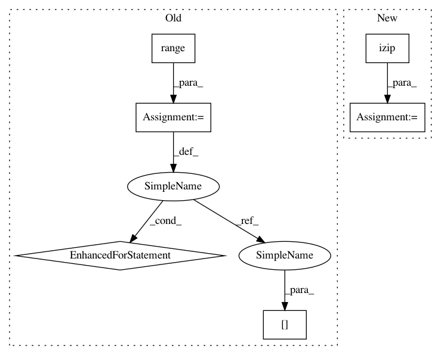

02d5a085316ce3cf2ef767ace6d20d3678f196f9,src/nsgtf.py,,nsgtf,#Any#Any#Any#Any#,40
Before Change
c = [] // Initialisation of the result
// The actual transform
for ii in range(n):
X = len(g[ii])
pos = N.arange(-floor(X/2.),ceil(X/2.),dtype=int)+timepos[ii]-1
win_range = N.mod(pos,Ls+fill)
t = f[win_range]*N.fft.fftshift(N.conj(g[ii]))
// TODO: the following indexes can be written as two slices
ixs = N.concatenate((N.arange(M[ii]-int(floor(X/2.)),M[ii]),N.arange(0,int(ceil(X/2.)))))
if M[ii] < X: // if the number of time channels is too small, aliasing is introduced
// TODO: branch not tested
col = ceil(float(X)/M[ii])
temp = N.zeros((M[ii],col),dtype=complex)
temp[ixs] = t
temp = N.sum(temp,axis=1)
else:
temp = N.zeros(M[ii],dtype=complex)
temp[ixs] = t
// TODO: can FFT be padded to power of 2?
c.append(ifft(temp))
// if max(M) == min(M):
// c = c.T
return c,Ls
After Change
c = [] // Initialisation of the result
// The actual transform
for gii,tpii,mii in izip(g,timepos,M):
X = len(gii)
pos = N.arange(-floor(X/2.),ceil(X/2.),dtype=int)+tpii-1
win_range = N.mod(pos,Ls+fill)
t = f[win_range]*N.fft.fftshift(N.conj(gii))
// TODO: the following indexes can be written as two slices
ixs = N.concatenate((N.arange(mii-floor(X/2.),mii,dtype=int),N.arange(0,ceil(X/2.),dtype=int)))
if mii < X: // if the number of time channels is too small, aliasing is introduced
// TODO: branch not tested
col = ceil(float(X)/mii)
temp = N.zeros((mii,col),dtype=complex)
temp[ixs] = t
temp = N.sum(temp,axis=1)
else:
temp = N.zeros(mii,dtype=complex)
temp[ixs] = t
// TODO: can FFT be padded to power of 2?
c.append(ifft(temp))
// if max(M) == min(M):
// c = c.T
return c,Ls
In pattern: SUPERPATTERN
Frequency: 3
Non-data size: 6
Instances
Project Name: grrrr/nsgt
Commit Name: 02d5a085316ce3cf2ef767ace6d20d3678f196f9
Time: 2011-03-30
Author: gr@grrrr.org
File Name: src/nsgtf.py
Class Name:
Method Name: nsgtf
Project Name: grrrr/nsgt
Commit Name: 02d5a085316ce3cf2ef767ace6d20d3678f196f9
Time: 2011-03-30
Author: gr@grrrr.org
File Name: src/nsgtf.py
Class Name:
Method Name: nsgtf
Project Name: grrrr/nsgt
Commit Name: 02d5a085316ce3cf2ef767ace6d20d3678f196f9
Time: 2011-03-30
Author: gr@grrrr.org
File Name: src/nsigtf.py
Class Name:
Method Name: nsigtf
Project Name: dask/dask-image
Commit Name: aab843410171a11dfd721b1d9cc980bee4420427
Time: 2018-09-02
Author: jakirkham@gmail.com
File Name: dask_image/ndfourier/_utils.py
Class Name:
Method Name: _get_freq_grid